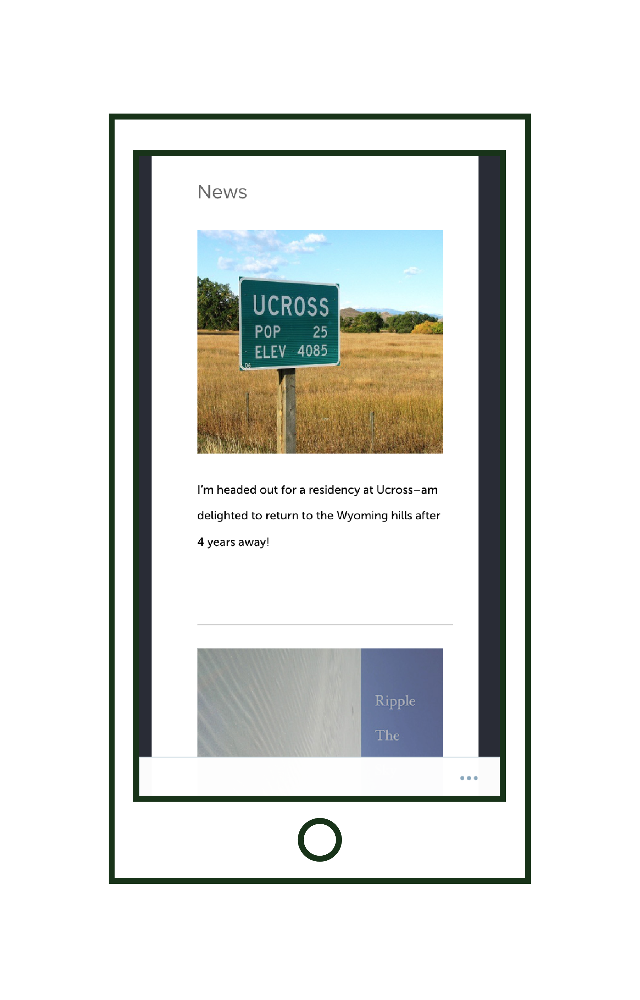
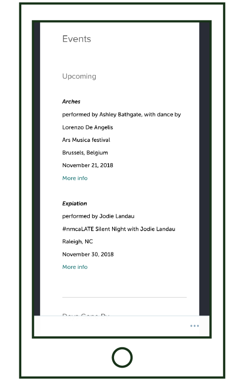
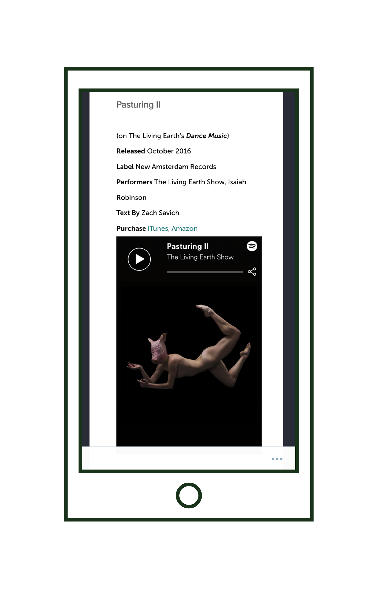
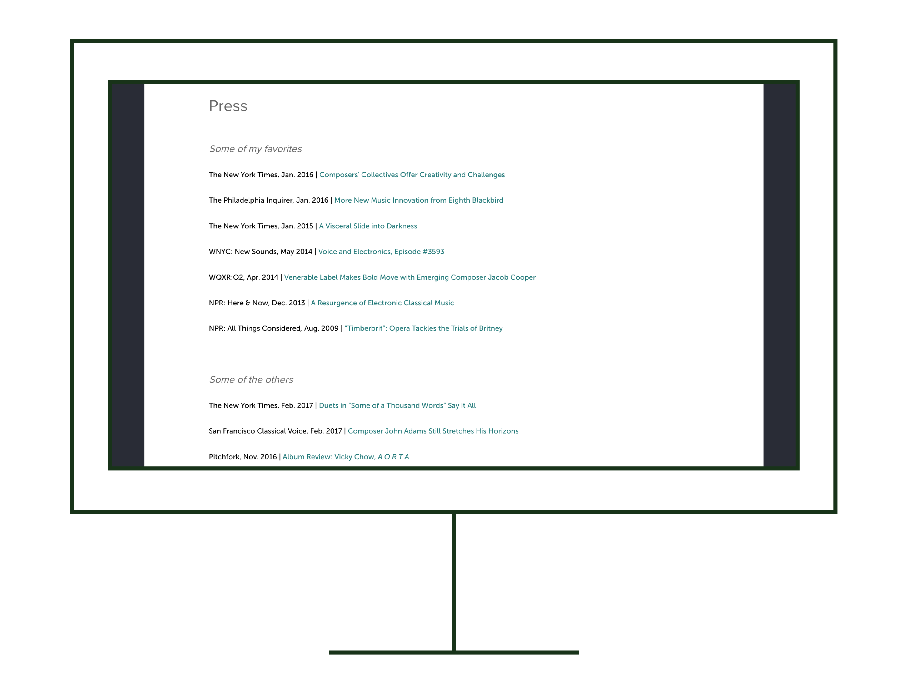

Jacob Cooper is a composer and musician. He needed a new website that had a similar feel to his old one but was simple for him to update without learning how to code. I redesigned his website and migrated it from a cPanel hosting service to Wordpress.
2017




